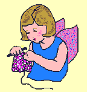

Crochet, My Beloved
Crochet, My Beloved
Crochet is probably the fiber art that I'm most comfortable with. I was around six or seven when my mom picked it up and showed me as well. I still have the very first pattern book she bought me as well as a little bit of the yarn I thought was too beautiful to use at such a young age! I've dabbled off and on since then, mostly with smaller projects, but I'd like to start working on some larger wearables in the near future, especially once I have more handspun yarn to use up. =3
Resources
- [ARTICLE] Sit Up and Get a Grip: Ergonomics for Crocheters by Andee Graves for Interweave
- [ARTICLE] Crochet Stitch Dictionary by Oombawka Design Crochet (I like this one because it includes photo tutorials and sometimes video tutorials too.)
Free Crochet Patterns & Collections
